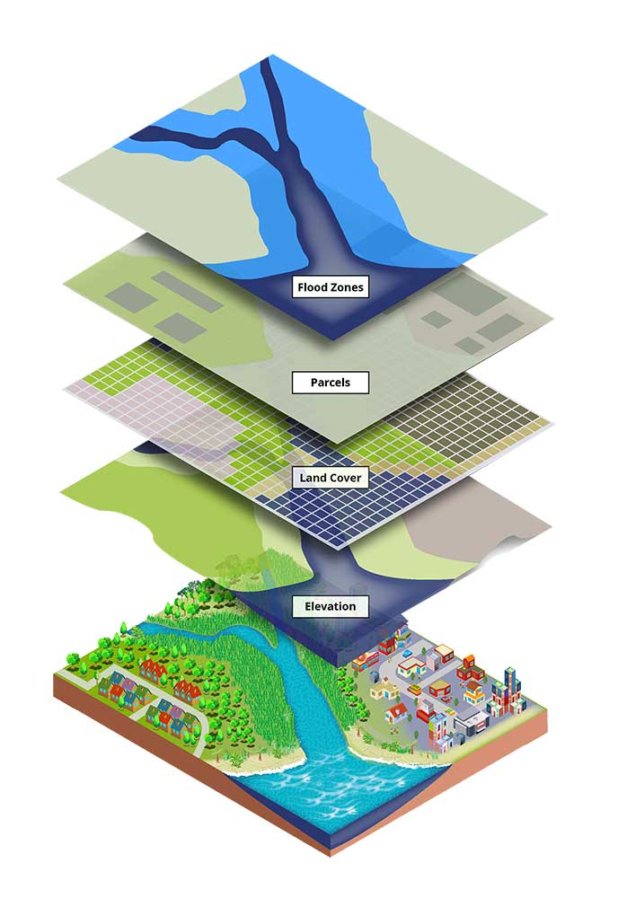

I work at the intersection of GIS, Python, Web GIS, and geospatial problem-solving. I mentor students and help them move from fundamentals to real-world applications, portfolio building, and project development.
Automated GIS workflow using PyQGIS, raster processing, and weighted overlay methods.
Interactive map-based dashboards using modern GIS web technologies.
Designed and delivered GIS, Python, and portfolio-building learning tracks.
Email: vasudha@example.com
LinkedIn: linkedin.com/in/yourprofile